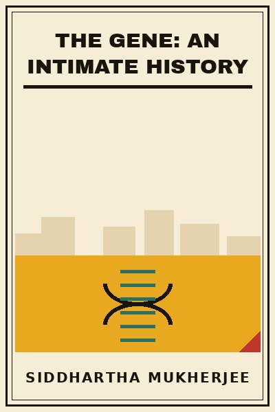

Library › History
The Gene: An Intimate History - Summary & Key Lessons

From Mendel's peas to CRISPR: the story of the gene, and of the questions it forces on every family.
📖 OPEN THE FULL INTERACTIVE BREAKDOWN →🌐 Read it in Hindi, Hinglish, Gujarati, Tamil & 22 more languages - free, with audio.
💡 The Big Idea
Mukherjee writes the gene's biography: Mendel counting peas, Darwin's missing mechanism, Griffith and Avery proving DNA is the material, Watson and Crick's structure, the Central Dogma, the Human Genome Project, and CRISPR's arrival, the moment heredity became editable. Woven through is the intimate history: the author's family carries schizophrenia and bipolar disorder through generations, the book's moral spine. Along the way the darkest chord: eugenics, how a science of heredity was twisted into forced sterilization and genocide, and why the ethics of editing are not future abstractions but the present's hardest question. The gene explains us; the question is what we will explain away.
🧠 The 10 Key Lessons
Lesson 1: The Monk Who Counted
Part 1
Mendel, failing his teaching exams, grew 28,000 pea plants and found the laws of inheritance: discrete units (genes) that pair, separate and recombine in ratios. The paper sat unread for thirty-four years.
📖 Example: Smooth vs wrinkled peas gave 3:1 ratios generation after generation: the arithmetic of heredity hiding in a monastery garden. Read the full example →
⚡ Do this: Look for the discretes in your own messy data: the underlying units are usually counting something simple.
Lesson 2: The Missing Mechanism
Part 1
Darwin had variation and selection but no mechanism for how traits pass. The gene filled the gap: heredity is particulate, not blended, and mutations supply the variation selection edits.
📖 Example: Fleeming Jenkin's 1867 objection, blending would dilute any beneficial trait into nothing, was fatal until Mendel's particles resurfaced. Read the full example →
⚡ Do this: In any system you study, find what carries information between generations, of habits, of customers, of culture, before theorizing change.
Lesson 3: Eugenics: The Science That Wasn't
Part 2
The gene's darkest chapter: American forced sterilizations and Nazi 'science' perverted heredity into politics. The lesson is permanent: the moment a science of human difference meets state power without ethics, atrocity follows.
📖 Example: Buck v. Bell (1927), where the US Supreme Court authorized sterilization, was never overturned: three generations of imbeciles are enough, wrote the Court. Read the full example →
⚡ Do this: When your field gains power over people, write its ethics down early and loudly. Science without a conscience is just efficiency.
Lesson 4: DNA: The Transforming Principle
Part 3
Avery, MacLeod and McCarty showed DNA carries heredity; Hershey-Chase confirmed it; Watson and Crick's double helix explained how it copies. The material of inheritance became readable, then writable.
📖 Example: The 'transforming principle' that turned harmless bacteria lethal was DNA: identity itself could be transferred molecule to molecule. Read the full example →
⚡ Do this: Master the fundamentals of your field's 'DNA', the substrate everyone builds on, before chasing the fashionable applications.
Lesson 5: The Central Dogma and Its Surprises
Part 4
DNA makes RNA makes protein, the gene as a recipe. But regulation, splicing, epigenetics and switching complicate the story: the same genome builds a brain cell and a liver cell, and experience can silence genes.
📖 Example: Identical twins diverge with age: their genomes match, their epigenetic marks drift with life. Nurture writes on nature's pages. Read the full example →
⚡ Do this: Hold nature-nurture as a dial, not a switch: in teams and children alike, the environment regulates what potential expresses.
Lesson 6: Genetic Disease: Reading the Ledger
Part 5
From sickle cell to Huntington's, single-gene diseases taught genetics its first hard lessons, and carrier screening, newborn tests and sequencing turned family history into readable risk.
📖 Example: The Tuskegee shadow and the Ashkenazi Tay-Sachs screening program: two lessons in how genetic medicine must be done, with consent or with coercion. Read the full example →
⚡ Do this: Know your family's medical ledger and write it down. It is the cheapest genetic test you will ever take.
Lesson 7: Schizophrenia in the Family
Part 6
Mukherjee's uncles and cousins carried severe mental illness: polygenic, environmental, devastating. His father's line haunted the book: risk written in chords, not single notes, and inherited silence around it.
📖 Example: The family's cycle, brilliant uncles lost to episodes, conversations never had, shows how genetic stigma silences exactly the conversations that inform the next generation. Read the full example →
⚡ Do this: Ask your family the health questions that went unasked. Silence compounds like interest.
Lesson 8: The Human Genome Project
Part 6
The 13-year, billions-of-dollars project read our three billion letters, and found fewer genes than expected: the genome is less a blueprint than a regulatory library, its complexity in the reading.
📖 Example: Humans have roughly the same gene count as a nematode worm: the difference lies in regulation, splicing and the non-coding majority. Read the full example →
⚡ Do this: Complexity rarely lives in the count of parts; it lives in the rules of interaction. Study the rules.
Lesson 9: Editing the Code: CRISPR
Part 7
Bacterial immune machinery became a programmable scalpel: CRISPR-Cas9 can cut and rewrite genes with precision, raising the permanent question, who decides which edits, for therapy only or for enhancement?
📖 Example: The 2018 CRISPR babies scandal in China crossed the line the field had drawn: the global response drew the line again, louder. Read the full example →
⚡ Do this: Follow the ethics as closely as the capability: the technology will be ready before the consensus is.
Lesson 10: Postgenomic: The Choices Ahead
Part 8
We now hold heredity's pen: embryo screening, gene therapy, polygenic scores. The gene's biography ends where our responsibility begins, the intimate history becomes everyone's history.
📖 Example: Parents choosing embryos by genetic score is already here in fertility clinics: the future arrived as a billing code. Read the full example →
⚡ Do this: Decide your own lines now, therapy yes, enhancement?, and join the conversation: silence leaves the choices to whoever shows up.
✅ 5-Step Action Plan
- Write down your family's medical history this month.
- Read the ethics of gene editing alongside the headlines about it.
- When your field gains power over people, help write its ethics early.
⚠️ When This Doesn't Work
A popular history: the polygenic complexity of mental illness is still being untangled, and CRISPR's capabilities move faster than the book's snapshot. The eugenics warning ages only too well.
💀 The Graveyard Proves It
📷 23andMe - 15 Million DNA Profiles, No Second Act. Burn: $6B valuation → bankruptcy. Read the full case study →
💬 Best Quotes from The Gene: An Intimate History
- “Genes, according to our current understanding, are carried in the chromosomes, and chromosomes are carried in cells, and cells in bodies, and bodies in the world.”
- “A monogenic variant is like a single note; the polygenic variant is a chord.”
- “We are all listed in the same ledger of chance and chemical instruction.”
Interactive version: mark lessons as read, listen in your language, share quote cards.